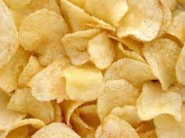
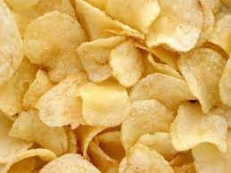

Format Reference:
Hand drawn flat design meal planner Free Vector. (2022, January 26). Freepik. https://www.freepik.com/free-vector/simple-weekly-diet-meal-planner_21913939.htm#query=meal%20planner&position=1&from_view=keyword&track=ais
| Monday | Tuesday | Wednesday | Thursday | Friday | Saturday | Sunday | |
|---|---|---|---|---|---|---|---|
| Breakfast | Fruit Smoothie (mango) with French toast in the side |
Scrambled eggs mixed with tomatoes and a banana |
Cereal with pure orange juice |
Oatmeal and a whole grain toast |
Peanut butter and jam sandwich with milk |
Waffles with hot chocolate |
Mixed fruits (berries) |
| Lunch | Sinigang baboy and plain rice |
Adobo and fried rice |
Tilapia and plain rice |
Fried Chicken and garlic rice |
Nilagang Baboy and plain rice |
Garlic butter Shrimp and plain rice |
Ginisang Ampalaya and plain rice |
| Snack | Frozen Mangoes and low fat yogurt |
Chicken Sandwich |
Crackers | Nuts and Seeds |
Bread and butter |
Potato chips  |
String Cheese and Apples |
| Dinner | Sinigang and plain rice |
Adobo and fried rice |
Tilapia and plain rice |
Fried Chicken and garlic rice |
Nilaga and plain rice |
Garlic butter Shrimp and plain rice |
Ampalaya with egg and plain rice |